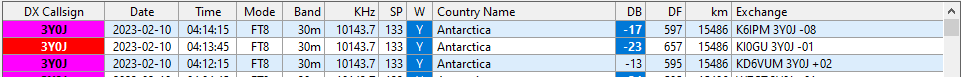

<!-- MHonArc v2.6.19+ -->
<!--X-Subject: Re: [NCDXC Chat] DX Spot Bouvet 10.144 FT8 01:19 UTC -->
<!--X-From-R13: [ngg Yraarql &#60;zxraarqlNnxraarqltebhc.pbz> -->
<!--X-Date: Thu, 09 Feb 2023 22:47:49 &#45;0600 -->
<!--X-Message-Id: SJ0PR18MB49994BE732E82298AB129A7EC6DE9@SJ0PR18MB4999.namprd18.prod.outlook.com -->
<!--X-Content-Type: multipart/related -->
<!--X-Reference: edebab73&#45;4887&#45;4e20&#45;8d37&#45;5578035ba5fc@earthlink.net -->
<!--X-Reference: CABMJ7OYxO&#45;sVePWK6uT13PFGaK2pyKUfp_u26iwvXWut0MXK2w@mail.gmail.com -->
<!--X-Reference: CABMJ7OboibQtJ34_FfLDdRD4cXw=Agd798nTSOYWWUNouoD5TQ@mail.gmail.com -->
<!--X-Derived: pngpQC6TUbiYt.png -->
<!--X-Derived: pngbmBXbkFh66.png -->
<!--X-Head-End-->
<!DOCTYPE HTML PUBLIC "-//W3C//DTD HTML 4.01 Transitional//EN"
        "http://www.w3.org/TR/html4/loose.dtd">
<html>
<head>

    <meta name="robots" content="noindex, nofollow">
<title>Re: [NCDXC Chat] DX Spot Bouvet 10.144 FT8 01:19 UTC</title>
<link rev="made" href="mailto:mkennedy@akennedygroup.com">
</head>
<body>
<!--X-Body-Begin-->
<!--X-User-Header-->
<!--X-User-Header-End-->
<!--X-TopPNI-->
<hr>
[<a href="msg27955.html">Date Prev</a>][<a href="msg27957.html">Date Next</a>][<a href="msg27952.html">Thread Prev</a>][<a href="msg27950.html">Thread Next</a>][<a href="maillist.html#27956">Date Index</a>][<a href="threads.html#27956">Thread Index</a>]
<!--X-TopPNI-End-->
<!--X-MsgBody-->
<!--X-Subject-Header-Begin-->
<h1>Re: [NCDXC Chat] DX Spot Bouvet 10.144 FT8 01:19 UTC</h1>
<hr>
<!--X-Subject-Header-End-->
<!--X-Head-of-Message-->
<ul>
<li><em>To</em>: Hauns Froehlingsdorf &lt;<a href="mailto:ki0gu%40fros.com">ki0gu@fros.com</a>&gt;, Paul Booth &lt;<a href="mailto:wa6ibu%40earthlink.net">wa6ibu@earthlink.net</a>&gt;</li>
<li><em>Subject</em>: Re: [NCDXC Chat] DX Spot Bouvet 10.144 FT8 01:19 UTC</li>
<li><em>From</em>: Matt Kennedy &lt;<a href="mailto:mkennedy%40akennedygroup.com">mkennedy@akennedygroup.com</a>&gt;</li>
<li><em>Date</em>: Fri, 10 Feb 2023 04:47:42 +0000</li>
<li><em>Accept-language</em>: en-US</li>
<li><em>Arc-authentication-results</em>: i=1; mx.microsoft.com 1; spf=pass smtp.mailfrom=akennedygroup.com; dmarc=pass action=none header.from=akennedygroup.com; dkim=pass header.d=akennedygroup.com; arc=none</li>
<li><em>Arc-message-signature</em>: i=1; a=rsa-sha256; c=relaxed/relaxed; d=microsoft.com;  s=arcselector9901; h=From:Date:Subject:Message-ID:Content-Type:MIME-Version:X-MS-Exchange-AntiSpam-MessageData-ChunkCount:X-MS-Exchange-AntiSpam-MessageData-0:X-MS-Exchange-AntiSpam-MessageData-1; bh=bZzxqClgHpYh+zUWdBW9ocfWGpCsXNKZIbn6sKXypJU=; b=dJdVMR676bl+SPC60JzncgMTrCBHwBvxpNPoVoZGzAtOsUkF2GkyU9NfqM0vZioIpesk8Ktpi4V4Ugi5yND9/8x0d3wSKGKc523zN68KZ19YCYdzFSpcqVHuKTs/SENZoTHCZxQnSG+ZdZxKDmvMwO6//oy3gDk1Ljsp4QfWOe8Sjw5jXWYvV9OCfSnOx6UN1q+CwYYxVENyrmHgsbKJIboHdTLQGwWjYUU0Jw7ViK25ldcNhoCTYtSavuZhQKhpWPy2oUp4fbONFpYSVBfuUAxSQhaDlCCz/YjamXKdrKrOCDTmExs8XkL1q9gnsi775rwX7XkrKkCx065gDXVarg==</li>
<li><em>Arc-seal</em>: i=1; a=rsa-sha256; s=arcselector9901; d=microsoft.com; cv=none; b=glaXY798ORrF/DOukjA5gFUjscpVdassFPViNr5fQWbEnpUHjhq1vODK3d0wKTZ6J+IdVfKP+GurQe0aMevsvMzETd63R9/meYWv+hhz8J2MkBz/Nv4bwuj+kNrfKMqKwDBQ9iRgO4tAU7AtZRLwnoc6Kfs8V6b7zhNbhs41sgkKZeZLmDDPobKs8/9ivJR8MN1aDUV9CWUFBJKVxaPw+wr/KjuX5nB760tLoekryLW4+dF2i7caUbEvQBEzJMMDogtzlunrom1rG0kgyjFN9BqgfnsffUNJe1YvAqzAaxxirTY1sds4XN4bUXM1OeqsT9b4qbNGSWRTpJSohNSUcA==</li>
<li><em>Authentication-results</em>: dkim=none (message not signed) header.d=none;dmarc=none action=none header.from=akennedygroup.com;</li>
<li><em>Cc</em>: &quot;<a href="mailto:chat%40ncdxc.org">chat@ncdxc.org</a>&quot; &lt;<a href="mailto:chat%40ncdxc.org">chat@ncdxc.org</a>&gt;</li>
<li><em>Dkim-signature</em>: v=1; a=rsa-sha256; c=relaxed/relaxed; d=akennedygroup.com; s=selector1; h=From:Date:Subject:Message-ID:Content-Type:MIME-Version:X-MS-Exchange-SenderADCheck; bh=bZzxqClgHpYh+zUWdBW9ocfWGpCsXNKZIbn6sKXypJU=; b=CvJMOW6VKlFrOvJSCbCJogC8nGMJom9NYDIUZ/w2nwrNILq23o2IuYcUqhZ37lExqOGSbjFVrtynsQaj/rnxo0Z0pUOYoMLWbBjdQaeYZFAPgan+5gmnWn3mUpEgXCQEFKhEU/7UfOxGIuTbI7wvVzGm4YngeJlpEOxDzk35pyhlmcCFKPV5CnGHa69lc599c+ukVMA4mgXc2a3Wak8LXRLNbuM2AGOlkTprQyoyBEvuTKUlo8Qrqc9RNS6r+ZnsIb5B157jNxBjcE10K9lhCoL+Y1tPNnlXkCFefxRJYAoNsXZzhdM0lyHa2JHiBHLbL0rlINGoo1YvggGe5bQEjw==</li>
<li><em>In-reply-to</em>: &lt;CABMJ7OboibQtJ34_FfLDdRD4cXw=Agd798nTSOYWWUNouoD5TQ@mail.gmail.com&gt;</li>
<li><em>List-archive</em>: &lt;<a href="http://mail.ncdxc.org/mailman/private/chat_ncdxc.org/">http://mail.ncdxc.org/mailman/private/chat_ncdxc.org/</a>&gt;</li>
<li><em>List-help</em>: &lt;<a href="mailto:chat-request@ncdxc.org?subject=help">mailto:chat-request@ncdxc.org?subject=help</a>&gt;</li>
<li><em>List-id</em>: NCDXC Discussion List &lt;chat.ncdxc.org&gt;</li>
<li><em>List-post</em>: &lt;<a href="mailto:chat@ncdxc.org">mailto:chat@ncdxc.org</a>&gt;</li>
<li><em>List-subscribe</em>: &lt;<a href="http://mail.ncdxc.org/mailman/listinfo/chat_ncdxc.org">http://mail.ncdxc.org/mailman/listinfo/chat_ncdxc.org</a>&gt;, &lt;<a href="mailto:chat-request@ncdxc.org?subject=subscribe">mailto:chat-request@ncdxc.org?subject=subscribe</a>&gt;</li>
<li><em>List-unsubscribe</em>: &lt;<a href="http://mail.ncdxc.org/mailman/options/chat_ncdxc.org">http://mail.ncdxc.org/mailman/options/chat_ncdxc.org</a>&gt;, &lt;<a href="mailto:chat-request@ncdxc.org?subject=unsubscribe">mailto:chat-request@ncdxc.org?subject=unsubscribe</a>&gt;</li>
<li><em>References</em>: &lt;<a href="msg27948.html">edebab73-4887-4e20-8d37-5578035ba5fc@earthlink.net</a>&gt; &lt;<a href="msg27949.html">CABMJ7OYxO-sVePWK6uT13PFGaK2pyKUfp_u26iwvXWut0MXK2w@mail.gmail.com</a>&gt; &lt;CABMJ7OboibQtJ34_FfLDdRD4cXw=Agd798nTSOYWWUNouoD5TQ@mail.gmail.com&gt;</li>
<li><em>Thread-index</em>: AQHZPQXk7799gnY5EEOKkhBICdiugq7Hk7eAgAAB6gCAAAPc4A==</li>
<li><em>Thread-topic</em>: [NCDXC Chat] DX Spot Bouvet 10.144 FT8 01:19 UTC</li>
</ul>
<!--X-Head-of-Message-End-->
<!--X-Head-Body-Sep-Begin-->
<hr>
<!--X-Head-Body-Sep-End-->
<!--X-Body-of-Message-->
<table width="100%"><tr><td style="a:link { color: blue } a:visited { color: purple } ">


<div class="WordSection1">
<p class="MsoNormal">If I were a betting man I would put my money on the odd 3Y is the real deal. He was odd last night, I am still getting odd 3Y decodes, his signal strength goes up and down, and besides my QSO was with the odd 3Y. FT8 is fun, no tunners,
 or UP UP UP, and you can eat a sandwich and make a QSO at the same time. <o:p></o:p></p>
<p class="MsoNormal"><o:p>&nbsp;</o:p></p>
<p class="MsoNormal">Matt K6EME<o:p></o:p></p>
<p class="MsoNormal"><o:p>&nbsp;</o:p></p>
<div style="border:none;border-top:solid #E1E1E1 1.0pt;padding:3.0pt 0in 0in 0in">
<p class="MsoNormal"><b>From:</b> Chat &lt;chat-bounces@ncdxc.org&gt; <b>On Behalf Of </b>
Hauns Froehlingsdorf via Chat<br>
<b>Sent:</b> Thursday, February 9, 2023 8:26 PM<br>
<b>To:</b> Paul Booth &lt;wa6ibu@earthlink.net&gt;<br>
<b>Cc:</b> chat@ncdxc.org<br>
<b>Subject:</b> Re: [NCDXC Chat] DX Spot Bouvet 10.144 FT8 01:19 UTC<o:p></o:p></p>
</div>
<p class="MsoNormal"><o:p>&nbsp;</o:p></p>
<div>
<p class="MsoNormal">So, I was just thinking.&nbsp; What if team&nbsp;3Y0J was trying to throw the pirate stations off by publishing they were F/H and even only.&nbsp; So the pirate idiots do the same thing, but in all reality the legit station was NOT F/H and odd...<o:p></o:p></p>
<div>
<p class="MsoNormal"><o:p>&nbsp;</o:p></p>
</div>
<div>
<p class="MsoNormal">That would be a genius&nbsp;move no?&nbsp;&nbsp;<o:p></o:p></p>
</div>
<div>
<p class="MsoNormal"><o:p>&nbsp;</o:p></p>
</div>
<div>
<p class="MsoNormal">reverse psychology ftw?&nbsp;<span style="font-family:&quot;Segoe UI Emoji&quot;,sans-serif">&#128540;</span><o:p></o:p></p>
</div>
<div>
<p class="MsoNormal"><o:p>&nbsp;</o:p></p>
</div>
<div>
<p class="MsoNormal">Hauns KI0GU<o:p></o:p></p>
</div>
</div>
<p class="MsoNormal"><o:p>&nbsp;</o:p></p>
<div>
<div>
<p class="MsoNormal">On Thu, Feb 9, 2023 at 8:19 PM Hauns Froehlingsdorf &lt;<a rel="nofollow" href="mailto:ki0gu@fros.com">ki0gu@fros.com</a>&gt; wrote:<o:p></o:p></p>
</div>
<blockquote style="border:none;border-left:solid #CCCCCC 1.0pt;padding:0in 0in 0in 6.0pt;margin-left:4.8pt;margin-right:0in">
<div>
<p class="MsoNormal"><o:p></o:p></p>
<div>
<p class="MsoNormal"><o:p>&nbsp;</o:p></p>
</div>
<div>
<p class="MsoNormal">Well, I got the odd one.&nbsp; Here's hoping!<o:p></o:p></p>
</div>
<div>
<p class="MsoNormal"><o:p>&nbsp;</o:p></p>
</div>
<div>
<p class="MsoNormal">-73<o:p></o:p></p>
</div>
<div>
<p class="MsoNormal">Hauns KI0GU<o:p></o:p></p>
</div>
</div>
<p class="MsoNormal"><o:p>&nbsp;</o:p></p>
<div>
<div>
<p class="MsoNormal">On Thu, Feb 9, 2023 at 8:12 PM Paul Booth via Chat &lt;<a rel="nofollow" href="mailto:chat@ncdxc.org" target="_blank">chat@ncdxc.org</a>&gt; wrote:<o:p></o:p></p>
</div>
<blockquote style="border:none;border-left:solid #CCCCCC 1.0pt;padding:0in 0in 0in 6.0pt;margin-left:4.8pt;margin-right:0in">
<div>
<p style="margin:0.1rem 0px"><span style="font-size:12.0pt;font-family:&quot;Arial&quot;,sans-serif;color:black">He may be a pirate but you can't have the real and a pirate on the same frequency with one being odd and the other even.&nbsp; Cause if the even was doing f/h,
 then the odds would be answering on the same frequency the supposed pirate would be using and you would never hear him.&nbsp; I would argue that you can't hear both unless far enough apart.&nbsp; Sound reasonable?<o:p></o:p></span></p>
<p style="margin:0.1rem 0px"><span style="font-size:12.0pt;font-family:&quot;Arial&quot;,sans-serif;color:black">&nbsp;<o:p></o:p></span></p>
<p style="margin:0.1rem 0px"><span style="font-size:12.0pt;font-family:&quot;Arial&quot;,sans-serif;color:black">Paul, W6IBU<o:p></o:p></span></p>
</div>
<div style="border:none;border-left:solid #AAAAAA 1.0pt;padding:0in 0in 0in 11.0pt;box-sizing:border-box">
<p>-----Original Message-----<br>
From: Roberto Sadkowski &lt;<a rel="nofollow" href="mailto:rsadkowski@gmail.com" target="_blank">rsadkowski@gmail.com</a>&gt;<br>
Sent: Feb 9, 2023 7:02 PM<br>
To: Rick NK7I &lt;<a rel="nofollow" href="mailto:rick.nk7i@gmail.com" target="_blank">rick.nk7i@gmail.com</a>&gt;,
<a rel="nofollow" href="mailto:chat@ncdxc.org" target="_blank">chat@ncdxc.org</a> &lt;<a rel="nofollow" href="mailto:chat@ncdxc.org" target="_blank">chat@ncdxc.org</a>&gt;<br>
Subject: Re: [NCDXC Chat] DX Spot Bouvet 10.144 FT8 01:19 UTC<o:p></o:p></p>
<p style="margin:0.1rem 0px">&nbsp;<o:p></o:p></p>
<div>
<p class="MsoNormal" style="mso-margin-top-alt:auto;mso-margin-bottom-alt:auto">I would bet Rick&#x2019;s Station
<span style="font-family:&quot;Segoe UI Emoji&quot;,sans-serif">&#128522;</span> that the Odd is a pirate.&nbsp; They were very clear F/H, and for a pirate to have some fun, only choice is to use the opposite slot. Unless he spots on another frequency F/H and that will confuse everyone
 even more.<o:p></o:p></p>
<p class="MsoNormal" style="mso-margin-top-alt:auto;mso-margin-bottom-alt:auto">Was it yesterday that I heard their signal S9 on 40m in my wet noodle? Didn&#x2019;t last long.<o:p></o:p></p>
<p class="MsoNormal" style="mso-margin-top-alt:auto;mso-margin-bottom-alt:auto">&nbsp;<o:p></o:p></p>
<p class="MsoNormal" style="mso-margin-top-alt:auto;mso-margin-bottom-alt:auto">Roberto<o:p></o:p></p>
<p class="MsoNormal" style="mso-margin-top-alt:auto;mso-margin-bottom-alt:auto">K6KM<o:p></o:p></p>
<div style="border:none;border-top:solid #E1E1E1 1.0pt;padding:3.0pt 0in 0in 0in">
<p class="MsoNormal" style="mso-margin-top-alt:auto;mso-margin-bottom-alt:auto"><strong><span style="font-family:&quot;Calibri&quot;,sans-serif">From:
</span></strong><a rel="nofollow" href="mailto:chat@ncdxc.org" target="_blank">Rick NK7I via Chat</a><br>
<strong><span style="font-family:&quot;Calibri&quot;,sans-serif">Sent: </span></strong>Thursday, February 9, 2023 6:58 PM<br>
<strong><span style="font-family:&quot;Calibri&quot;,sans-serif">To: </span></strong><a rel="nofollow" href="mailto:chat@ncdxc.org" target="_blank">chat@ncdxc.org</a><br>
<strong><span style="font-family:&quot;Calibri&quot;,sans-serif">Subject: </span></strong>Re: [NCDXC Chat] DX Spot Bouvet 10.144 FT8 01:19 UTC<o:p></o:p></p>
</div>
<p class="MsoNormal" style="mso-margin-top-alt:auto;mso-margin-bottom-alt:auto">&nbsp;<o:p></o:p></p>
<p>Work them both, one of them will be right and confirm.&nbsp; <span style="font-family:&quot;Segoe UI Emoji&quot;,sans-serif">
&#128514;</span><o:p></o:p></p>
<p>Take the time to turn the beam.&nbsp; The one claiming to be 3Y0J but transmitting on ODD RIGHT NOW, is MUCH stronger at 210 (looking at Oz) instead of the correct (short) azimuth of 122.&nbsp; If not Oz (Australia), then it's long path to E EU.&nbsp; (We had this exact
 azimuth for a Maquarie&nbsp; pirate a few months back)<o:p></o:p></p>
<p>Post your findings here, we typically presume a direct path as well.&nbsp; But the path isn't 15 seconds off.<o:p></o:p></p>
<p>&nbsp;<o:p></o:p></p>
<p><o:p></o:p></p>
<p class="MsoNormal" style="mso-margin-top-alt:auto;mso-margin-bottom-alt:auto">73,<o:p></o:p></p>
<p>Rick nk7i<o:p></o:p></p>
<div>
<p class="MsoNormal" style="mso-margin-top-alt:auto;mso-margin-bottom-alt:auto">On 2/9/2023 6:20 PM, Roberto Sadkowski via Chat wrote:<o:p></o:p></p>
</div>
<blockquote style="margin-top:5.0pt;margin-bottom:5.0pt">
<p class="MsoNormal" style="mso-margin-top-alt:auto;mso-margin-bottom-alt:auto">Isn&#x2019;t the ODD time slot a Pirate?<o:p></o:p></p>
</blockquote>
<p class="MsoNormal" style="mso-margin-top-alt:auto;margin-right:.5in;margin-bottom:5.0pt;margin-left:.5in">
&nbsp;<o:p></o:p></p>
<p class="MsoNormal" style="mso-margin-top-alt:auto;mso-margin-bottom-alt:auto">&nbsp;<o:p></o:p></p>
</div>
</div>
<p style="margin:0.1rem 0px">&nbsp;<o:p></o:p></p>
<p class="MsoNormal">_______________________________________________<br>
Chat mailing list<br>
<a rel="nofollow" href="mailto:Chat@ncdxc.org" target="_blank">Chat@ncdxc.org</a><br>
<a rel="nofollow" href="https://linkprotect.cudasvc.com/url?a=http%3a%2f%2fmail.ncdxc.org%2fmailman%2flistinfo%2fchat_ncdxc.org&amp;c=E,1,HLW7XqPng1wRi4UCopTzcrVFL2bXwXYkB36HnljI_TNbUp42jq6OEcLijUc4cs4KN0RjIH7g6Em6LZhk-wHQKNl7PX4ILIjGtMQIjNxPvA,,&amp;typo=1" target="_blank">http://mail.ncdxc.org/mailman/listinfo/chat_ncdxc.org</a><o:p></o:p></p>
</blockquote>
</div>
</blockquote>
</div>
</div>


</td></tr></table>
<!--X-Body-of-Message-End-->
<!--X-MsgBody-End-->
<!--X-Follow-Ups-->
<hr>
<!--X-Follow-Ups-End-->
<!--X-References-->
<ul><li><strong>References</strong>:
<ul>
<li><strong><a name="27948" href="msg27948.html">Re: [NCDXC Chat] DX Spot Bouvet 10.144 FT8 01:19 UTC</a></strong>
<ul><li><em>From:</em> Paul Booth &lt;wa6ibu@earthlink.net&gt;</li></ul></li>
<li><strong><a name="27949" href="msg27949.html">Re: [NCDXC Chat] DX Spot Bouvet 10.144 FT8 01:19 UTC</a></strong>
<ul><li><em>From:</em> Hauns Froehlingsdorf &lt;ki0gu@fros.com&gt;</li></ul></li>
<li><strong><a name="27952" href="msg27952.html">Re: [NCDXC Chat] DX Spot Bouvet 10.144 FT8 01:19 UTC</a></strong>
<ul><li><em>From:</em> Hauns Froehlingsdorf &lt;ki0gu@fros.com&gt;</li></ul></li>
</ul></li></ul>
<!--X-References-End-->
<!--X-BotPNI-->
<ul>
<li>Prev by Date:
<strong><a href="msg27955.html">[NCDXC Chat] FT8WW 14.085 MHz MSHV</a></strong>
</li>
<li>Next by Date:
<strong><a href="msg27957.html">[NCDXC Chat] ***SPAM***  Re:  FT8WW 14.085 MHz MSHV</a></strong>
</li>
<li>Previous by thread:
<strong><a href="msg27952.html">Re: [NCDXC Chat] DX Spot Bouvet 10.144 FT8 01:19 UTC</a></strong>
</li>
<li>Next by thread:
<strong><a href="msg27950.html">[NCDXC Chat] Pirate or real?</a></strong>
</li>
<li>Index(es):
<ul>
<li><a href="maillist.html#27956"><strong>Date</strong></a></li>
<li><a href="threads.html#27956"><strong>Thread</strong></a></li>
</ul>
</li>
</ul>

<!--X-BotPNI-End-->
<!--X-User-Footer-->
<!--X-User-Footer-End-->
</body>
</html>
